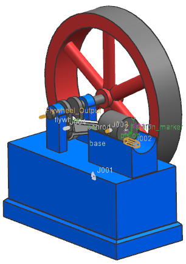

打开仿真
 打开(标准工具条)
打开(标准工具条)
-
文件位置
steam_engine

-
文件类型
仿真文件 (*.sim)
-
文件名称
controller.sim
-
确定

在 NX 中，您将：
-
定义速度传感器和工厂输出，为 Flywheel_output 旋转副指定想要的速度-2rad/s。
-
在已经在活塞顶部预先定义的矢量力载荷上定义工厂输入。
已经提供了一个控制系统，它将监视并控制活塞速度。在Simulink 中，您将：
-
将 Motion Plant 块集成到控制系统框图中。
-
运行协同仿真。
在协同仿真期间，控制系统将打开足够长时间的力信号以加速至2 rad/s，然后关闭力信号。控制系统将继续监视从 NX 送回的速度反馈，并在需要维持想要的速度时打开力信号。这是继电器类型的反馈控制系统，所有力信号要么是完全打开，要么是完全关闭。
最后，您将在 NX 运动仿真中对模型进行后处理。